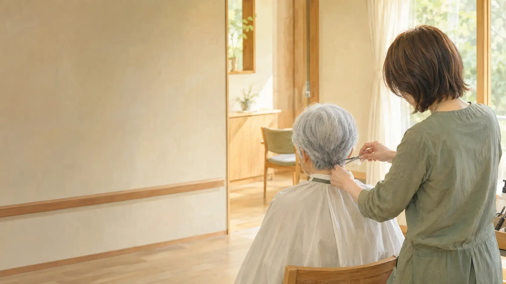

施設・病院の方
3名から訪問可能。日程・人数・メニューをまとめて相談でき、外出付き添いの負担を減らせます。

訪問美容 髪人 横浜泉店
横浜市泉区・戸塚区・瀬谷区・旭区、藤沢市・大和市・綾瀬市へ。
女性スタッフ中心の訪問美容チームが伺います。
※掲載写真はサービスイメージです
3名から訪問可能。日程・人数・メニューをまとめて相談でき、外出付き添いの負担を減らせます。
外出が難しいご本人の自宅へ訪問。ご家族からの相談・仮予約にも対応します。
技術と経験が収入へ返る、高給与・高還元の働き方。訪問未経験やブランクも歓迎します。
求人条件を見る →LOCAL SPECIALIST
横浜泉店は、対応地域を絞った訪問美容チームです。施設ごとのご事情や訪問時間、利用者さまの状態を確認しながら、続けやすい訪問方法を一緒に考えます。
横浜市泉区戸塚区瀬谷区旭区藤沢市大和市綾瀬市
その他の横浜市内・周辺地域も、人数や距離によりご相談いただけます。WOMEN STYLISTS
髪型や白髪、身だしなみなど、細かな希望を伝えやすい雰囲気を大切にします。
利用者さまのペースに配慮し、施設スタッフさまと確認しながら施術を進めます。
ご希望や利用者さまの状況に合わせ、女性スタッフ派遣のご相談を承ります。
OUR PURPOSE
訪問美容は、ただ短く切るだけのサービスではありません。鏡を見て笑顔になる時間や、ご家族との会話が増えるきっかけまで届けたい。
KamiBito横浜泉店は、施設・ご家族・美容師が直接つながり、必要な人へ必要な美容を届ける地域の窓口です。
SERVICE
身体の状態や施設環境に合わせて、
無理のない施術方法をご提案します。
ご自宅、介護施設、病院、デイサービスへ訪問。車椅子のままでも対応します。
専用の移動シャンプー機を使用。施設内やご自宅でも洗髪まで対応できます。
座位を保つことが難しい方も、身体の状態を確認しながらベッド上で施術します。
カットだけでなく、身だしなみやおしゃれを楽しむための施術もご相談いただけます。
FOR FACILITIES
01日程・人数を一括調整担当者さまと直接相談し、施設の流れに合わせて訪問します。
02女性スタッフ派遣可能ご利用者さまの希望や状況に合わせてご相談できます。
03まずは見積りから人数・メニュー・訪問頻度を確認して料金をご案内します。
FACILITY SUPPORT
カットするだけでなく、導入・継続の手間まで減らせるように対応します。
毎月・隔月など、施設の希望人数や運営に合わせた訪問日程をご相談いただけます。
利用者さまごとの希望メニューをまとめて相談。担当者さまの連絡負担を減らします。
座位が難しい方も、状態と施術環境を確認しながら無理のない方法をご提案します。
水回りや前かがみが難しい場合も、専用機材によるシャンプーをご相談いただけます。
カットだけでなく、白髪やボリュームなど「いつものおしゃれ」にも対応します。
施設担当者さまだけでなく、ご本人・ご家族からの施術相談も直接受け付けます。
PRICE
まとまった人数で、もっと利用しやすく。
施設担当者さまから直接ご相談いただけます。
3,000円／1名
2,500円／1名
6,000円
6,000円
※料金は税込表記です。訪問条件、施術内容、髪の長さなどにより追加料金が発生する場合は事前にご案内します。
VISIT AREA
下記以外の地域も、距離や人数によって対応できる場合があります。まずは直接ご相談ください。
泉区戸塚区瀬谷区旭区
神奈川県央・湘南藤沢市大和市綾瀬市
泉区：和泉町・中田・岡津・緑園などHOW IT WORKS
住所・メニュー・日時を選択。
担当者から料金と時間をご連絡。
道具を持って伺います。
CAREER
訪問美容は、年齢やライフスタイルが変わっても技術を活かせる仕事です。売上だけでなく、経験・対応力・貢献が収入へ返る環境をつくります。
月給
22万円〜9:00〜17:00／残業ほぼなし／月8日休み施術売上
60%還元技術と稼働が、そのまま収入につながる働き方※業務形態、交通費、材料費などの詳細条件は応募時に直接ご説明します。
DIRECT CONTACT
相談内容を選ぶと専用フォームが開きます。内容を送信後、担当者から直接ご連絡します。
公式電話窓口／平日9:00〜17:000120-218-800